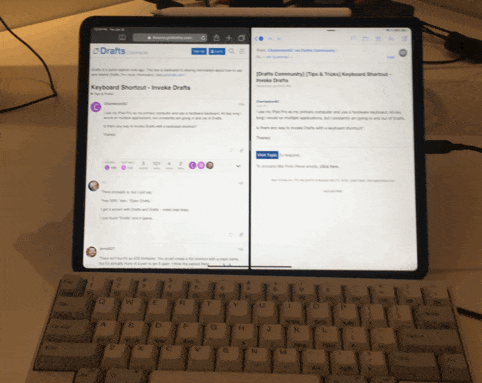

I use my iPad Pro as my primary computer and use a hardware keyboard. All day long I would on multiple applications, but constantly am going in and out of Drafts.
Is there any way to invoke Drafts with a keyboard shortcut?
Thanks!
I use my iPad Pro as my primary computer and use a hardware keyboard. All day long I would on multiple applications, but constantly am going in and out of Drafts.
Is there any way to invoke Drafts with a keyboard shortcut?
Thanks!
There probably is, but I just say:
“Hey SIRI,” then, “Open Drafts.”
I get a screen with Drafts and Drafts – notes mad easy.
I just touch “Drafts” and it opens.
There isn’t but it’s an iOS limitation. You could create a Siri shortcut with a crazy name but it’s actually more of a pain to get it open. I think the easiest thing is just to do command space and type “drafts” then arrow down to it. Realistically I command tab back to it most of the time.
Either Command-Tab if you’ve used Drafts recently. If not, Command-Space and just typing “D” should do the trick if Drafts is your most used D app. No need to arrow, it’ll open whatever the first app displayed is even though it’s not highlighted.
I did this, but it was a hardware solution. I’m using a HHKB Pro2 (any USB keyboard will do) plugged into a BT-500. Not only does this device turn wired keyboards into BlueTooth keyboards, it introduces keyboard mapping & macros.
In my case, mapped the Insert key (Fn + \ on my keyboard) to launch Drafts:

To set this up, I open up a text editor (Drafts works well!) and enter command mode (Ctrl + Option + Insert). Then I type the following to create my macro and map it to Insert:
macro edit 4
0xc000221 delay:500 d r a f t s delay:1000 enter
map add insert macro:4
save
By the way, another nice mapping is Forward-Delete for Lock (holding down Lock triggers Siri):
map add del_fw 0xc000030
save
I sure miss my mechanical keyboard and keyboard mappings when I’m away from my desk!
I too use Drafts all day while on my iPad. I find it easiest just to add it to the current view by dragging it up from the icon bar. When I’m done I just swipe it off to the right. Whenever I need it I just swipe left and it’s back!
If by the icon bar you mean the dock then dragging it off removes it from the dock rather than opening it.
They do mean the dock, but if you have an iPad that is running an OS version that supports multi-tasking, have an app open, reveal the dock, and drag the Drafts icon from the dock, it will open it in a split view or a slide over (which is what @techntools is describing judging by the swiping gestures referenced). It won’t remove the app from the dock in these circumstances. If you are on the home screen, dragging the icon off will remove it from the dock.
Thought it was st like this. Thanks for clarifying.
How do you like that HHKB without the arrow keys? I use the arrow keys and arrow-key combos quite a lot on my keyboards (e.g. option-arrow to move by word, shift-arrow to highlight, etc.), and am wondering if having to hold the FN key to get arrow keys (in addition to having to hold other modifiers) is feasible.
Thanks!
It’s certainly an unusual layout, but I don’t really notice it anymore. When using arrow keys, my right-hand ring finger rests down on the Fn key, while my index finger presses each arrow key. If I need Shift, Command or Option modifiers, I press those with my other hand on the left side of the keyboard.
I’m also accustomed to Vim-style HJKL keys for movement, so whenever I’m in an app that supports that, I just use those. Vim (and the command line) was a big reason I chose this keyboard, because of the location of the Ctrl key.
It boggles my mind that on most keyboards, such an important home row position is given to the rarely-needed Caps Lock.
It’ll be a glorious day if/when Apple allows changing modifier behaviour on iOS as they already allow on macOS.